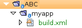
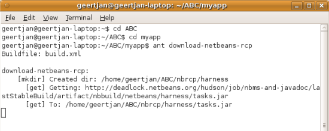
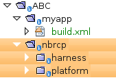
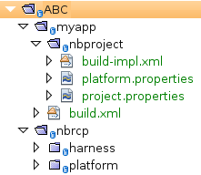
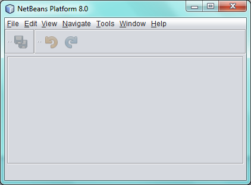
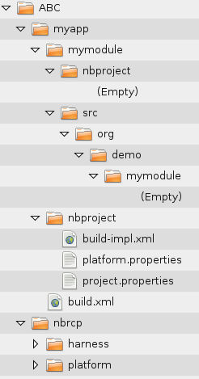
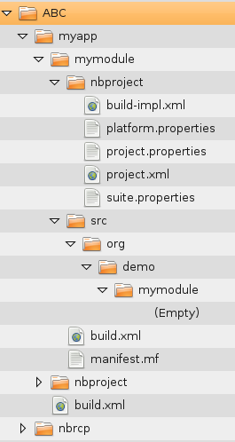
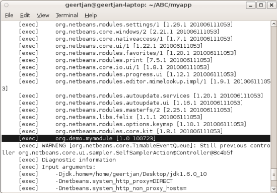
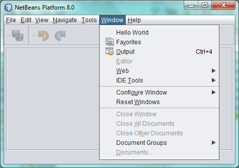
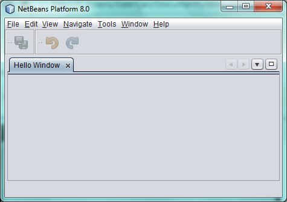

Apache NetBeans
Apache NetBeansLatest release
NetBeans Platform Ant Command Line Tutorial
| This tutorial needs a review. You can edit it in GitHub following these contribution guidelines. |
This document shows you how to use Ant and the command line to set up and deploy NetBeans Platform applications.
You will start by setting up a folder and file structure for deploying a NetBeans Platform application. The structure will consist of folders, together with Ant scripts and property files. For example, one of the Ant targets will download the NetBeans Platform, while another will run it. Next, you will create a new folder and file structure for adding a new module to the application. Finally, you will add code that will enable your module to provide new components, such as a new menu item, to the application.
Once you have gone through this simple scenario, you should not need to use NetBeans IDE at all when creating NetBeans Platform applications. On the other hand, you might still want to use NetBeans IDE, since it provides many wizards, templates, and other tools for generating code and visualizing module structures, which are features that no other IDE currently provides. Simultaneously, the instructions below provide all the NetBeans-specific information needed for someone to create a plugin for a different IDE enabling developers to use other IDEs to provide the folder structures and file contents outlined below.
For troubleshooting purposes, you are welcome to download the completed tutorial source code.
The tutorial assumes you have set up Ant and that you know how to use it.
Downloading the NetBeans Platform
In this section, you begin to set up a folder structure for your NetBeans Platform work, focusing on an Ant script to download the NetBeans Platform.
-
Create a new folder with a name of your choosing (here referred to as
ABC) and, within it, create a folder namedmyapp(or any other name), containing a file namedbuild.xml. At this point the structure of your application should be as follows:

1.
Define the content of the build.xml file as follows:
<?xml version="1.0" encoding="UTF-8"?>
<project name="myapp" basedir=".">
<description>Builds, tests, and runs the project "myapp".</description>
<!-- change this: -->
<property name="netbeans"
value="/home/geertjan/NetBeansProjects/ABC/nbrcp"/>
<property name="bootstrap.url"
value="http://deadlock.netbeans.org/hudson/job/nbms-and-javadoc/lastStableBuild/artifact/nbbuild/netbeans/harness/tasks.jar"/>
<property name="netbeans.updatecenter.url"
value="http://updates.netbeans.org/netbeans/updates/8.0/uc/final/distribution/catalog.xml.gz"/>
<target name="download-netbeans-rcp">
<mkdir dir="${netbeans}/harness"/>
<get src="${bootstrap.url}" dest="${netbeans}/harness/tasks.jar" usetimestamp="true" verbose="true"/>
<taskdef name="autoupdate" classname="org.netbeans.nbbuild.AutoUpdate" classpath="${netbeans}/harness/tasks.jar"/>
<autoupdate installdir="${netbeans}" updatecenter="${netbeans.updatecenter.url}">
<modules includes=".*" clusters="harness[0-9]*"/>
<modules includes=".*" clusters="platform[0-9]*"/>
</autoupdate>
</target>
</project>-
On the command line, go to the "ABC/myapp" folder and run this:
ant download-netbeans-rcpYou now see the NetBeans Platform downloading:

In your ABC folder, you now have a folder named "nbrcp", as shown below:

Read harness/README for a lot of tips, configuration data, and advice.
The folder "myapp" is where you will create your application, on top of the NetBeans Platform, which is in the folder "nbrcp".
Now that you have the NetBeans Platform, you can start creating an application on top of it.
Setting Up a NetBeans Platform Application
In this section, you set up a minimal folder and file structure for a new NetBeans Platform application.
At the end of this section, you will have a source structure on disk, as follows:

-
Within the "myapp" folder, create a folder named "nbproject". This folder will, from now onwards, be referred to as the "application project folder", while "myapp" will be referred to as the "application root folder".
-
Within the application project folder, create a file named
build-impl.xml, with the following content.
<?xml version="1.0" encoding="UTF-8"?>
<project name="myapp-impl" basedir=".." xmlns:sproject="https://netbeans.org/ns/nb-module-suite-project/1">
<property file="nbproject/platform.properties"/>
<macrodef name="property" uri="https://netbeans.org/ns/nb-module-suite-project/1">
<attribute name="name"/>
<attribute name="value"/>
<sequential>
<property name="@{name}" value="${@{value}}"/>
</sequential>
</macrodef>
<macrodef name="evalprops" uri="https://netbeans.org/ns/nb-module-suite-project/1">
<attribute name="property"/>
<attribute name="value"/>
<sequential>
<property name="@{property}" value="@{value}"/>
</sequential>
</macrodef>
<sproject:property name="harness.dir" value="nbplatform.${nbplatform.active}.harness.dir"/>
<sproject:property name="nbplatform.active.dir" value="nbplatform.${nbplatform.active}.netbeans.dest.dir"/>
<sproject:evalprops property="cluster.path.evaluated" value="${cluster.path}"/>
<import file="${harness.dir}/suite.xml"/>
</project>-
Import the
build-impl.xmlfile into thebuild.xmlfile, as follows:
<import file="nbproject/build-impl.xml"/>The build-impl.xml file gives you access to the NetBeans Platform infrastructure, such as its "run" target. You will never need to change the build-impl.xml file. On the other hand, the build.xml file is the Ant script where you will customize, where necessary, your application’s build process.
-
Within the application project folder, create a file named
platform.properties, with the following content.
run.args.extra=--laf Nimbus
nbplatform.active=default
nbplatform.active.dir=/home/geertjan/NetBeansProjects/ABC/nbrcp
harness.dir=${nbplatform.active.dir}/harness
cluster.path=${nbplatform.active.dir}/platform
disabled.modules=As you can see, the platform.properties file configures your NetBeans Platform application, pointing to its harness and the platform folders, as well as a placeholder for the modules you will disable, later in your development work. Make sure to change nbplatform.active.dir above to point to your "nbrcp" folder.
-
Within the application project folder, create a file named
project.properties, with the following content.
app.name=myapp
branding.token=${app.name}
modules=As you can see, the project.properties file is focused on the application. In this case, you have added keys in the file for the name of the application and the custom modules that the application will provide.
-
On the command line, go to the "ABC/myapp" folder and run this:
ant runThe NetBeans Platform starts up and you see a main window, with a menu bar and a tool bar, as shown below:

Try out some of the toolbar buttons and menu items, to see what the NetBeans Platform provided by default.
Setting Up a NetBeans Module
In this section, you set up a minimal folder and file structure for a new NetBeans module in your NetBeans Platform application. In the process, you also register the module with the application so that, when the application starts up, it will load the module together with the default NetBeans Platform modules making up the application.
-
Start by creating some folders:
-
Within the "myapp" folder, create a folder named "mymodule". This folder will, from now onwards, be referred to as the "module root folder".
-
Within the module root folder, create a new folder named "nbproject", which will, from now onwards, be referred to as the "module project folder".
-
Within the module root folder, create a new folder structure "src/org/demo/mymodule", which will be the main package.
-
Check that the structure you have created is now as follows:

-
In the module project folder, create the following:
-
A file named
suite.properties, with this content:
-
suite.dir=${basedir}/..The above points to the "myapp" folder, specifying that it is the application that owns this module.
-
A file named
project.properties, with this content:
javac.source=1.6
javac.compilerargs=-Xlint -Xlint:-serial-
A file named
project.xml, with this content:
<?xml version="1.0" encoding="UTF-8"?>
<project xmlns="https://netbeans.org/ns/project/1">
<type>org.netbeans.modules.apisupport.project</type>
<configuration>
<data xmlns="https://netbeans.org/ns/nb-module-project/3">
<code-name-base>org.demo.mymodule</code-name-base>
<suite-component/>
<module-dependencies>
</module-dependencies>
<public-packages/>
</data>
</configuration>
</project>-
A file named
build-impl.xml, with this content:
<?xml version="1.0" encoding="UTF-8"?>
<project name="org.demo.mymodule-impl" basedir="..">
<property file="nbproject/suite.properties"/>
<property file="${suite.dir}/nbproject/platform.properties"/>
<macrodef name="property" uri="https://netbeans.org/ns/nb-module-project/2">
<attribute name="name"/>
<attribute name="value"/>
<sequential>
<property name="@{name}" value="${@{value}}"/>
</sequential>
</macrodef>
<macrodef name="evalprops" uri="https://netbeans.org/ns/nb-module-project/2">
<attribute name="property"/>
<attribute name="value"/>
<sequential>
<property name="@{property}" value="@{value}"/>
</sequential>
</macrodef>
<nbmproject2:property name="harness.dir" value="nbplatform.${nbplatform.active}.harness.dir" xmlns:nbmproject2="https://netbeans.org/ns/nb-module-project/2"/>
<nbmproject2:property name="nbplatform.active.dir" value="nbplatform.${nbplatform.active}.netbeans.dest.dir" xmlns:nbmproject2="https://netbeans.org/ns/nb-module-project/2"/>
<nbmproject2:evalprops property="cluster.path.evaluated" value="${cluster.path}" xmlns:nbmproject2="https://netbeans.org/ns/nb-module-project/2"/>
<import file="${harness.dir}/build.xml"/>
</project>-
In the module root folder, that is, within the "mymodule" folder, create the following:
-
A file named
build.xml, with the following content:
-
<?xml version="1.0" encoding="UTF-8"?>
<project name="org.demo.mymodule" default="netbeans" basedir=".">
<description>Builds, tests, and runs the project org.demo.mymodule.</description>
<import file="nbproject/build-impl.xml"/>
</project>-
A file named
manifest.mf, with the following content:
Manifest-Version: 1.0
OpenIDE-Module: org.demo.mymodule
OpenIDE-Module-Specification-Version: 1.0-
Check that the "mymodule" structure you have created is now as follows:

-
In the application project folder, that is, "myapp/nbproject", change the "modules" key in "project.properties" to the following, to register the module with the application:
modules=${project.org.demo.mymodule}
project.org.demo.mymodule=mymodule-
On the command line, go to the "ABC/myapp" folder and run this:
ant run-
The application starts up and, since you didn’t add any code to the module, you see no changes in the application. Nevertheless, looking at the output, you can see that the module loaded successfully:

In the next section, you add a new feature to the application.
Adding a Menu Item
In this section, you add a menu item to the module you created in the previous section. All the files described below are assumed to be created in the main package, which is org.demo.mymodule.
-
Add a new Action class, in a file named "HelloWorldAction.java", to the module:
package org.demo.mymodule;
import java.awt.event.ActionEvent;
import java.awt.event.ActionListener;
import javax.swing.JOptionPane;
import org.openide.awt.ActionRegistration;
import org.openide.awt.ActionReference;
import org.openide.awt.ActionReferences;
import org.openide.awt.ActionID;
import org.openide.util.NbBundle.Messages;
@ActionID(category = "Window",
id = "org.demo.mymodule.HelloWorldAction")
@ActionRegistration(displayName = "#CTL_HelloWorldAction")
@ActionReferences({
@ActionReference(path = "Menu/Window", position = -100)
})
@Messages("CTL_HelloWorldAction=Hello World")
public final class HelloWorldAction implements ActionListener {
public void actionPerformed(ActionEvent e) {
JOptionPane.showMessageDialog(null, "hello...");
}
}-
In the module project folder, add the list of module dependencies to the "project.xml" file, as shown below:
<?xml version="1.0" encoding="UTF-8"?>
<project xmlns="https://netbeans.org/ns/project/1">
<type>org.netbeans.modules.apisupport.project</type>
<configuration>
<data xmlns="https://netbeans.org/ns/nb-module-project/3">
<code-name-base>org.demo.mymodule</code-name-base>
<suite-component/>
*<module-dependencies>
<dependency>
<code-name-base>org.netbeans.modules.settings</code-name-base>
<build-prerequisite/>
<compile-dependency/>
<run-dependency>
<release-version>1</release-version>
<specification-version>1.29</specification-version>
</run-dependency>
</dependency>
<dependency>
<code-name-base>org.openide.awt</code-name-base>
<build-prerequisite/>
<compile-dependency/>
<run-dependency>
<specification-version>6.7.1</specification-version>
</run-dependency>
</dependency>
<dependency>
<code-name-base>org.openide.util</code-name-base>
<build-prerequisite/>
<compile-dependency/>
<run-dependency>
<specification-version>8.1</specification-version>
</run-dependency>
</dependency>
</module-dependencies>*
<public-packages/>
</data>
</configuration>
</project>-
On the command line, go to the "ABC/myapp" folder and run this:
ant run-
The application starts up and shows a new menu item under the Window menu:

Adding a Window
In this section, you use the NetBeans TopComponent class to add a window to the module you created previously. All the files described below are assumed to be created in the main package, which is org.demo.mymodule.
-
Add a new TopComponent class to the module, including some code for initializing and persisting the TopComponent:
package org.demo.mymodule;
import org.openide.awt.ActionID;
import org.openide.awt.ActionReference;
import org.openide.windows.TopComponent;
import org.openide.util.NbBundle.Messages;
import static org.demo.mymodule.Bundle.*;
@TopComponent.Description(preferredID = "HelloTopComponent",
persistenceType = TopComponent.PERSISTENCE_ALWAYS)
@TopComponent.Registration(mode = "editor", openAtStartup = true)
@ActionID(category = "Window", id = "org.demo.mymodule.HelloTopComponent")
@ActionReference(path = "Menu/Window" /*, position = 333 */)
@TopComponent.OpenActionRegistration(displayName = "#CTL_HelloAction",
preferredID = "HelloTopComponent")
@Messages(
{"CTL_HelloAction=Open Hello Window",
"NAME_Hello=Hello Window"
})
public class HelloWorldTopComponent extends TopComponent {
public HelloWorldTopComponent() {
setDisplayName(NAME_Hello());
}
@Override
public void componentOpened() {
}
@Override
public void componentClosed() {
}
}-
In the module project folder, add the following module dependencies in the
project.xmlfile:
<module-dependencies>
<dependency>
<code-name-base>org.netbeans.modules.settings</code-name-base>
<build-prerequisite/>
<compile-dependency/>
<run-dependency>
<release-version>1</release-version>
<specification-version>1.29</specification-version>
</run-dependency>
</dependency>
<dependency>
<code-name-base>org.openide.awt</code-name-base>
<build-prerequisite/>
<compile-dependency/>
<run-dependency>
<specification-version>6.7.1</specification-version>
</run-dependency>
</dependency>
<dependency>
<code-name-base>org.openide.util</code-name-base>
<build-prerequisite/>
<compile-dependency/>
<run-dependency>
<specification-version>8.1</specification-version>
</run-dependency>
</dependency>
*<dependency>
<code-name-base>org.openide.util.lookup</code-name-base>
<build-prerequisite/>
<compile-dependency/>
<run-dependency>
<specification-version>8.6.1</specification-version>
</run-dependency>
</dependency>
<dependency>
<code-name-base>org.openide.windows</code-name-base>
<build-prerequisite/>
<compile-dependency/>
<run-dependency>
<specification-version>6.39.1</specification-version>
</run-dependency>
</dependency>*
</module-dependencies>-
On the command line, go to the "ABC/myapp" folder and run this:
ant run-
The application starts up and shows a new window, which can also be opened from the Window menu.

Congratulations, you’ve successfully set up a pure Ant-based application structure for working with the NetBeans Platform.